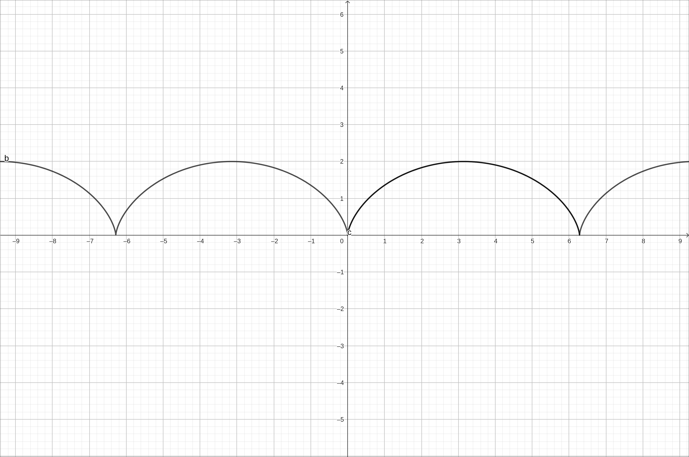
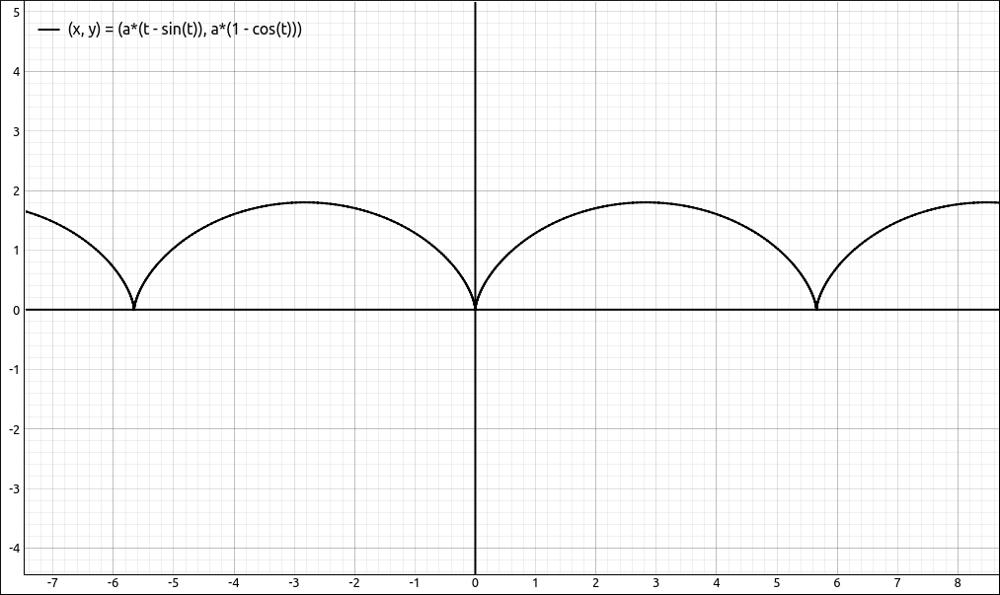
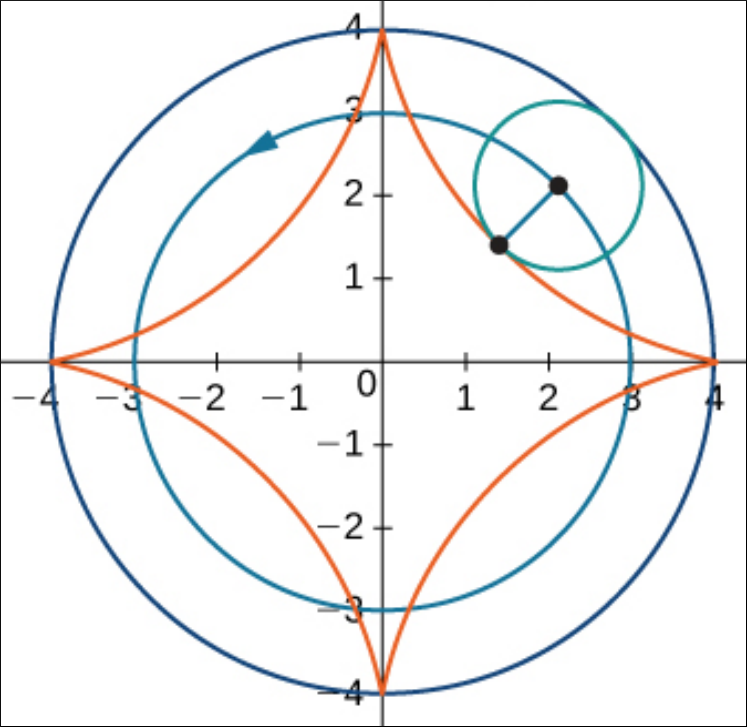
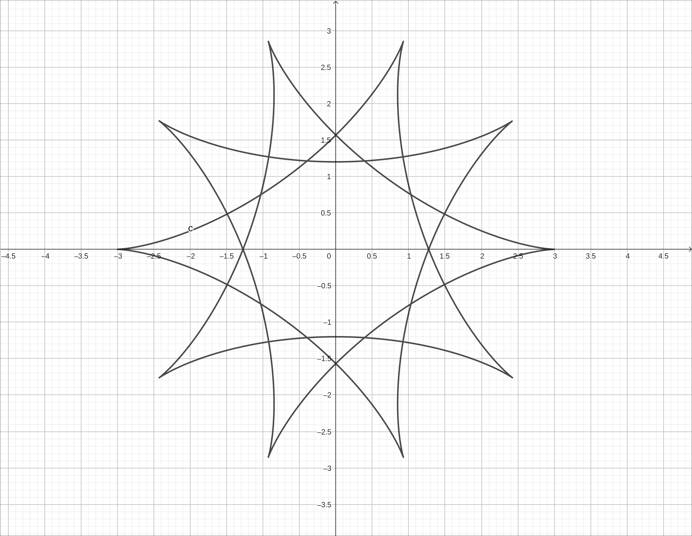
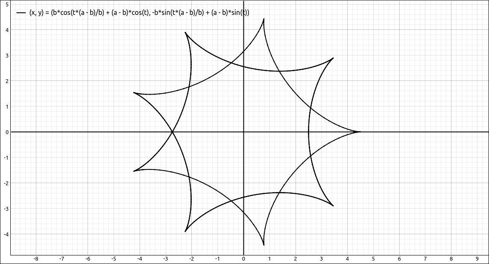

Parametric Equations#
Discussion & Definitions#
Definition: Parametric Equations
If \(x\) and \(y\) are continuous functions of \(t\) on an interval \(I\), then the equations
are called parametric equations and \(t\) is called the parameter. The set of points \((x, y)\) obtained as \(t\) varies over the interval \(I\) is called the graph of the parametric equations. The graph of parametric equations is called a parametric curve or plane curve.
Example: The Cycloid#
The Cycloid is defined parametrically as,
with \(-\infty < t < \infty.\) The Cycloid is the curve traced out by a fixed point on a moving wheel.
GeoGebra#
There are two primary ways to load a parametrically defined curve into GeoGebra, either as an ordered pair (x(t), y(t)) or using the Curve command. As an ordered pair we would input,
(a (t - sin(t)), a (1 - cos(t)))
Note that this is automatically converted to the Curve command. The curve command has the form,
Curve(x(t), y(t), parameter variable, lower bound, upper bound)
GeoGebra also saw the trigonometric functions in the expressions and automatically assumed that the bounds for the parameter should be \([0, 2\pi].\) This is not the case for the Cycloid so change these to about \([-10, 10].\)
Alternatively you could input the curve using the Curve command as below,
Curve((a (t-sin(t)),a (1-cos(t))),t,-10,10)

The Cycloid#
CLAE#
In CLAE, you can use either a list of two expressions [x(t), y(t)] or a \(2 \times 1\) matrix. In most cases you will probably just use a list, we will show the matrix input in the note at the end.
[a*(t - sin(t)), a*(1 - cos(t))]
Now just click and drag this over to the graphic area. It should default to a parametric equation, if not, change its type to Parametric Equations.

The Cycloid#
Note
CLAE also recognizes a \(2 \times 1\) matrix with expression entries for x and y as a parametric equation. For example, the following matrix is also the cycloid.
You can input these either with the matrix editor, the preferred method, or with the matrix syntax for SymPy.
Matrix([[a*(t - sin(t))], [a*(1 - cos(t))]])
Example: The Hypocycloid#
The Hypocycloid is defined parametrically as,
with \(-\infty < t < \infty.\) The Hypocycloid i similar to the Cycloid except that it is the curve traced out by a fixed point on a moving wheel of radius b rolling inside the circle of radius a.

The Hypocycloid Construction#
Alter the a and b sliders to see the different curves, you may want to increase the parameter range.
GeoGebra#
There are two primary ways to load a parametrically defined curve into GeoGebra, either as an ordered pair (x(t), y(t)) or using the Curve command. As an ordered pair we would input,
(b cos(t (a - b)/b) + (a - b) cos(t), -b sin(t (a - b)/b) + (a - b) sin(t))
Note that this is automatically converted to the Curve command. The curve command has the form,
Curve(x(t), y(t), parameter variable, lower bound, upper bound)
GeoGebra also saw the trigonometric functions in the expressions and automatically assumed that the bounds for the parameter should be \([0, 2\pi].\) This is not the case for the Hypocycloid so change these to about \([-10, 10].\)
Alternatively you could input the curve using the Curve command as below,
Curve((b cos(t ((a-b)/(b)))+(a-b) cos(t),-b sin(t ((a-b)/(b)))+(a-b) sin(t)),t,-10,10)

The Hypocycloid#
CLAE#
In CLAE, you can use either a list of two expressions [x(t), y(t)] or a \(2 \times 1\) matrix. In most cases you will probably just use a list, we will show the matrix input in the note at the end.
[b*cos(t*(a - b)/b) + (a - b)*cos(t), -b*sin(t*(a - b)/b) + (a - b)*sin(t)]
Now just click and drag this over to the graphic area. It should default to a parametric equation, if not, change its type to Parametric Equations.

The Hypocycloid#
Alter the a and b sliders to see the different curves, you may want to increase the parameter range and the number of points plotted.
Note
CLAE also recognizes a \(2 \times 1\) matrix with expression entries for x and y as a parametric equation. For example, the following matrix is also the cycloid.
You can input these either with the matrix editor, the preferred method, or with the matrix syntax for SymPy.
Matrix([[b*cos(t*(a - b)/b) + (a - b)*cos(t)], [-b*sin(t*(a - b)/b) + (a - b)*sin(t)]])